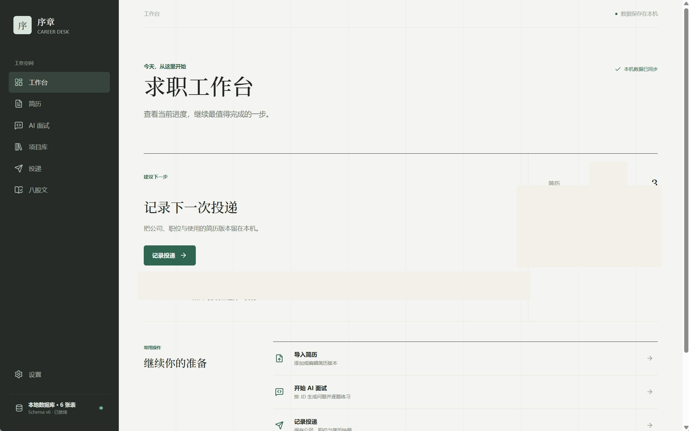
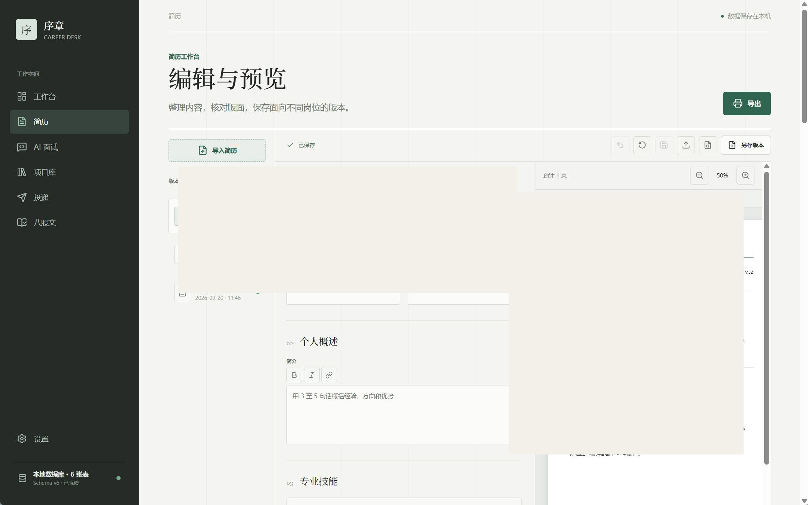
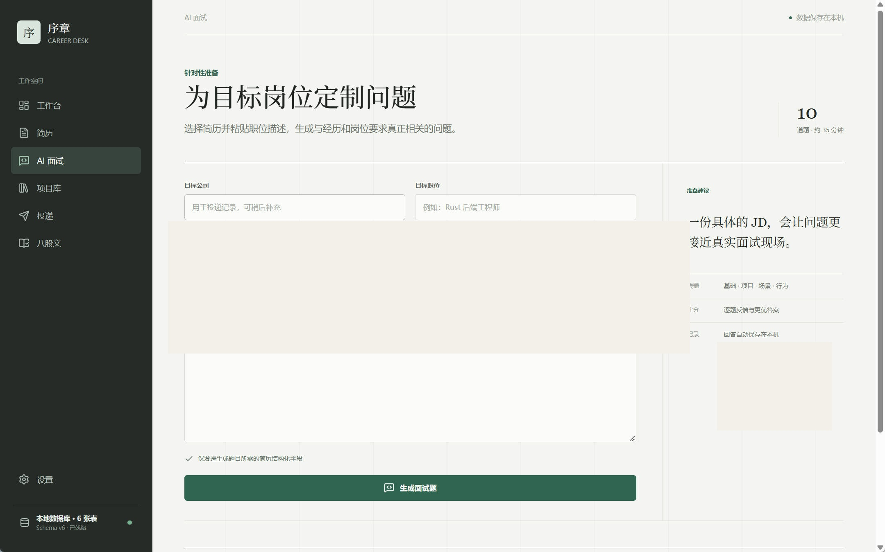
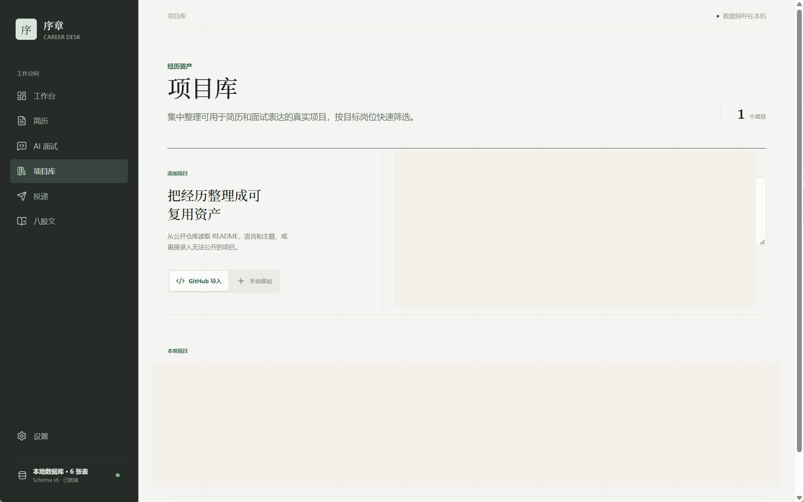
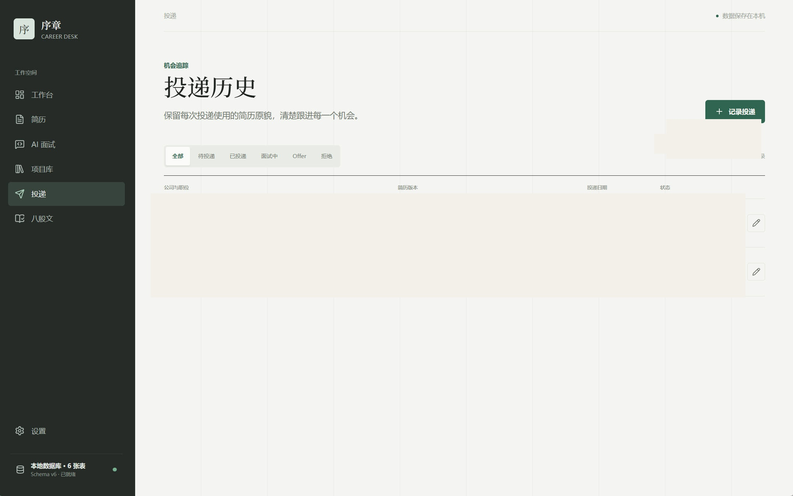
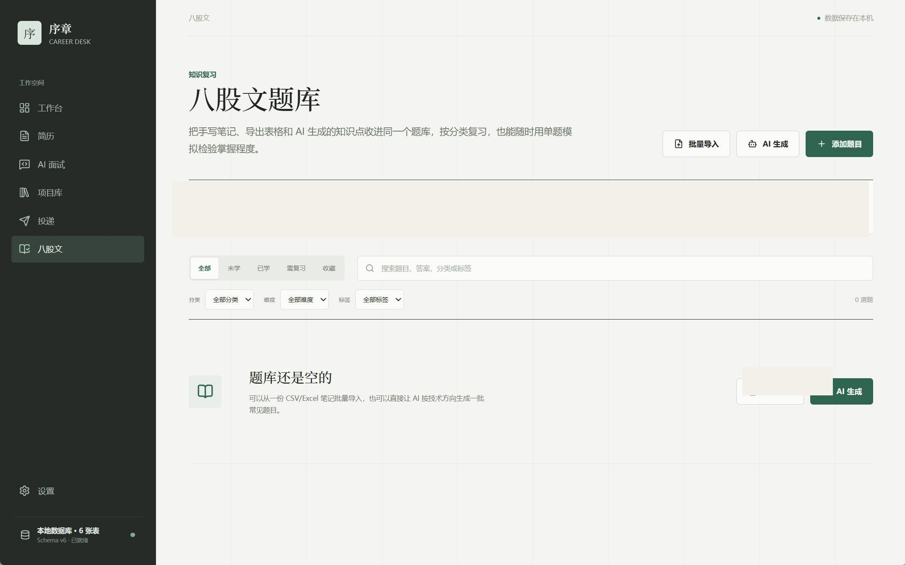

从简历整理到面试复盘的一站式本地求职工作台，把求职过程中分散的材料、练习和反馈收进一个可追踪的工作区。
求职过程中，简历版本、投递记录、面试准备资料和复盘笔记散落在不同工具里，很难在下一次面试前快速回顾此前的反馈和改进方向。
用 Rust 和 Tauri 构建本地优先的桌面工作台，覆盖简历版本管理、投递进度追踪、面试复盘笔记，并引入 AI 辅助生成面试复盘要点。
基于 Tauri 实现跨平台桌面应用壳，核心数据与逻辑保留在本地；接入 AI 能力辅助生成复盘总结和改进建议。
本地优先
数据保存在本地，不依赖云端
Tauri
轻量跨平台桌面应用壳
占位数据
待替换为实际验证结果





